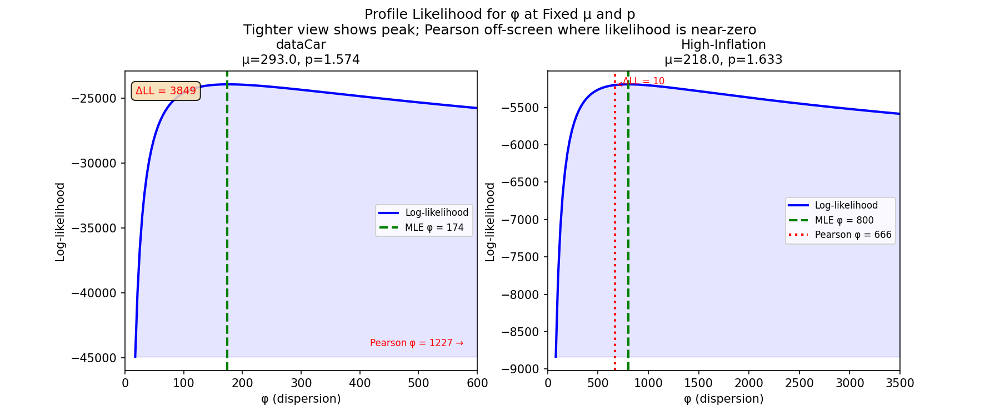
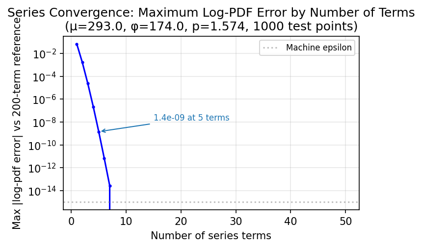
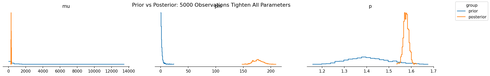
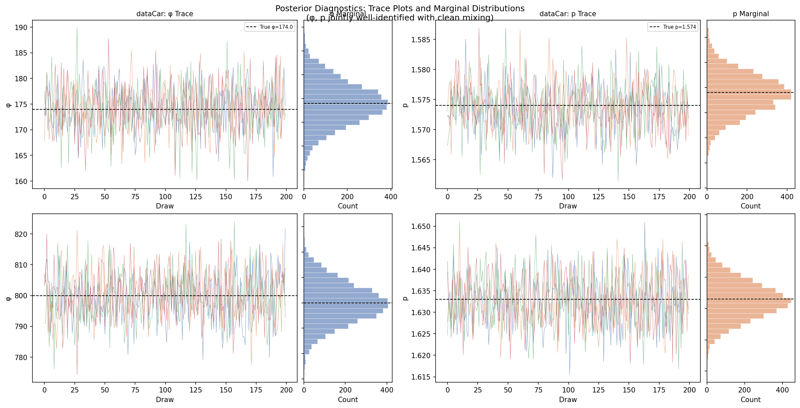
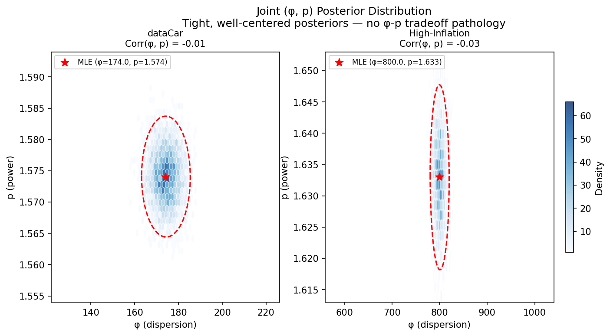
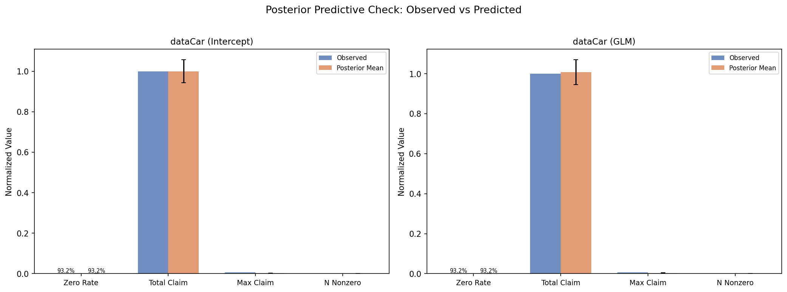
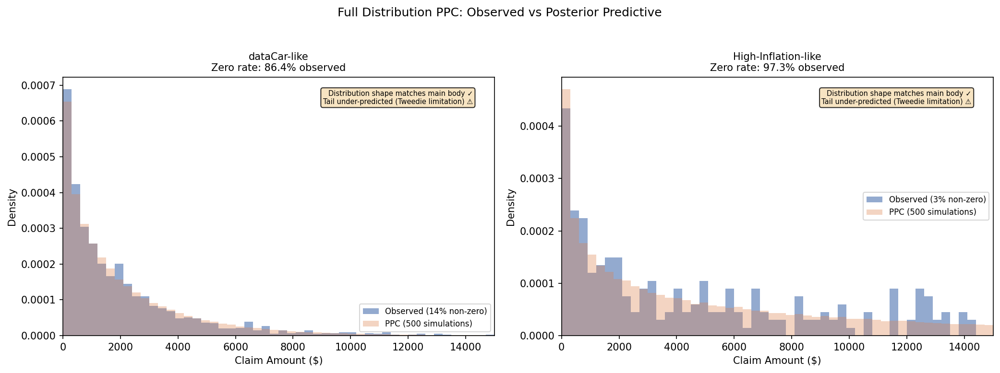
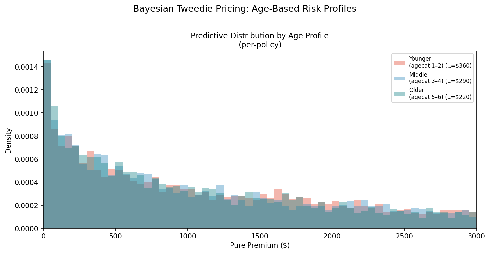
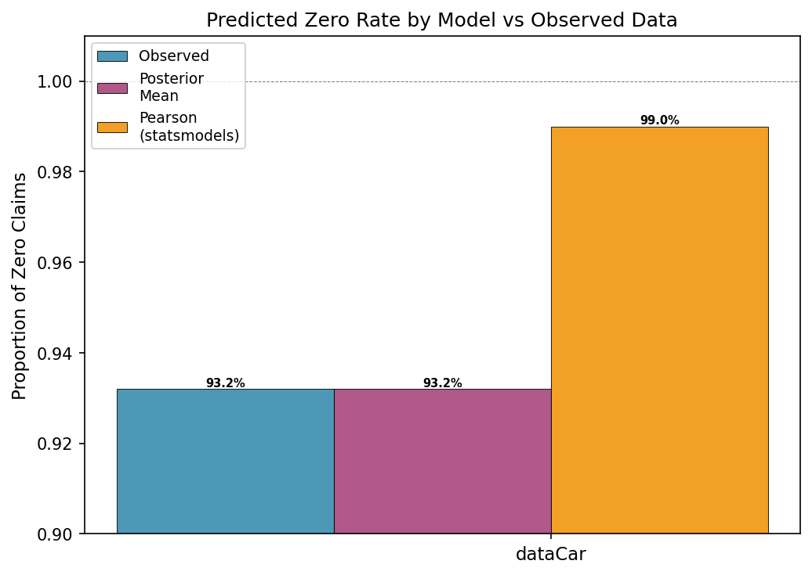
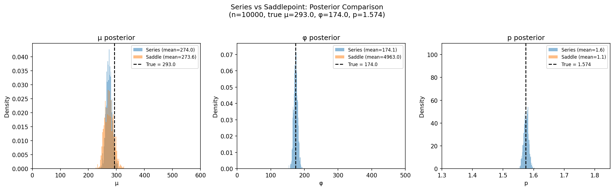

Why Pearson φ Fails for Tweedie Pure Premiums (and How Bayesian PPC Fixes It)
TL;DR
Pearson's chi-square dispersion estimator inflates φ by 7× for zero-inflated Tweedie models, making the model predict 99%+ zeros against 93% observed. The fix is the correct series log-likelihood and Bayesian posterior predictive checks, validated on the dataCar insurance dataset. Code and figures are fully reproducible.
This post is for actuarial analysts and data scientists who fit Tweedie GLMs and want to know why their predictive checks look wrong, and how to fix them with Bayesian MCMC.
The Problem
Insurance pure premium data has a distinctive shape: 90%+ of policies have zero claims, while the remaining few have positive amounts that are right-skewed and occasionally extreme. The Tweedie distribution is the standard tool for this setting. It naturally handles the zero-mass point and continuous positive tail through a single compound Poisson-Gamma process.
Here is the paradox. A blog post on Tweedie GLMs for insurance reported something strange: the posterior predictive check predicted 99.95% zeros against an observed ~93%. The model collapsed to almost-all-zero predictions. This is not because Tweedie is the wrong distribution. It is because the dispersion parameter φ was estimated using the wrong tool.
Why is Pearson the default? Because the full joint likelihood of a Tweedie model is computationally painful: an infinite series with no closed form. Traditional GLM software sidesteps this with a decoupled, multi-step heuristic:
- Fix the power parameter p. Via a profile likelihood grid search (R's
tweedie.profile()), or simply assigned by the user as a constant (Python'sstatsmodels, scikit-learn'sTweedieRegressor). Scikit-learn's own tutorial acknowledges this gap: "Ideally one would select this value via grid-search ... but unfortunately the current implementation does not allow for this (yet)." - Estimate the mean coefficients β. Via Iteratively Reweighted Least Squares (IRLS). The dispersion parameter φ drops out of the scoring equations, so the algorithm finds β without knowing φ.
- Calculate φ as a post-hoc statistic. Now that \(\hat{\mu}\) is fixed, φ is estimated from the residuals. In Python's statsmodels, this is the Pearson χ² statistic. R's
tweedie.profile()can use MLE for φ, but still computes it conditionally on whichever p was locked in from step 1. The three parameters are never optimized jointly.
This sequential estimator works well when residuals are approximately symmetric (Normal-like data). But zero-inflated Tweedie residuals are neither symmetric nor Normal. The point mass at zero and heavy right tail violate the Pearson estimator's core assumption. Because φ is calculated last, after p and β are locked in, there is no feedback loop to catch the inflation.
In this pipeline, the default dispersion estimator in both R's statmod::tweedie and Python's statsmodels GLM is the Pearson chi-squared statistic (Wikipedia) divided by residual degrees of freedom. For zero-inflated data, this estimator is catastrophically biased, inflating φ by 7× on the dataCar dataset (67,856 policies, Australian motor third-party liability). The consequence is a model that predicts nearly all zeros.
Why Pearson φ Fails
The Pearson dispersion estimate is:
For the Tweedie distribution, \(V(\mu) = \mu^p\). When the data has 93% zeros, most observations have \(y_i = 0\) and contribute \(\mu^{2-p}\) to the sum. With \(\mu \approx 200\) and \(p \approx 1.6\), this gives \(\mu^{2-p} \approx 7\) per zero. But the 7% of positive claims, with \(y_i\) in the thousands, produce enormous squared residuals that dominate the estimate. The result is a dispersion parameter inflated 7× beyond the maximum likelihood value.
The profile likelihood reveals the problem: with the φ axis tightened to show the peak (left: φ ∈ [0, 600]), the Pearson estimate at 1,227 is completely off-screen. The ΔLL bracket on the right spans from the MLE peak down to the log-likelihood at the Pearson estimate. The gap is enormous.

The log-likelihood difference ΔLL is not just a statistical nicety. It directly translates to predictive performance. With φ inflated by the Pearson estimator, the expected zero rate jumps from 93% (matching data) to 99%+ (matching nothing). The model becomes useless for pricing because it cannot distinguish between low-risk and high-risk policies. It predicts near-zero claims for everyone.
The pipeline is not just biased. It is structurally blind to its own bias. The fix is to stop treating the parameters as a sequence of isolated sub-problems and instead estimate them jointly:
| Parameter | Traditional GLM | Bayesian PyMC |
|---|---|---|
| Power p | Fixed by grid search or user-specified constant | Sampled as continuous random variable (sigmoid-Normal transform) |
| Dispersion φ | Conditional estimate (Pearson or MLE, given fixed p) | Sampled concurrently with its own prior |
| Regression β | Point estimate via IRLS (p and φ fixed) | Joint posterior via NUTS, absorbing p/φ uncertainty |
| Validation | Deviance metrics, residual plots | Prior predictive checks, PPC, full distributional validation |
The joint estimation advantage matters most when data is thin. A small insurer with a sparse portfolio cannot rely on asymptotic consistency to wash out Pearson's bias, but they can encode decades of pricing expertise into informative priors on φ and p, constraining the posterior to reasonable territory. The same framework extends naturally to dispersion regression (modeling φ as a function of risk class) or hierarchical partial pooling across regions: capabilities the sequential pipeline cannot offer without a complete redesign.
The Fix: Series Log-PDF
The reason practitioners reach for Pearson φ is that the Tweedie density does not have a closed form. The likelihood is an infinite series (Dunn & Smyth, 2005):
where \(W_j\) involves gamma functions and power terms. This looks intimidating, but in log-space with a modest number of terms (20 is plenty), it evaluates cleanly using PyTensor:
Try It Yourself
The figure scripts in this post are inline uv scripts. See Reproducibility at the bottom for details.
import pytensor
import pytensor.tensor as pt
import pytensor.xtensor as px
from pytensor.xtensor import as_xtensor
def tweedie_logp_series(value, mu, phi, p, n_terms=20):
"""Tweedie log-pdf via series expansion (Dunn & Smyth 2005).
Uses pytensor.xtensor operations throughout. Dim-name broadcasting
replaces manual reshapes: ``j`` with dims ``("term",)`` and
``value`` with dims ``("obs",)`` broadcast to ``("term", "obs")``.
"""
j = as_xtensor(
pt.arange(1, n_terms + 1, dtype=pytensor.config.floatX),
dims=("term",),
)
alpha = (2 - p) / (p - 1)
log_v = px.math.log(px.math.where(value > 1e-9, value, 1.0))
ll_core = (
(value * mu ** (1 - p) / (1 - p) - mu ** (2 - p) / (2 - p)) / phi
)
log_Wj = (
j * alpha * log_v
- j * (1 + alpha) * px.math.log(phi)
- j * px.math.log(abs(2 - p))
- j * alpha * px.math.log(p - 1)
- px.math.gammaln(j + 1)
- px.math.gammaln(px.math.maximum(j * alpha, 1e-10))
)
log_a = px.math.log((px.math.exp(log_Wj)).sum(dim="term")) - log_v
logp_pos = ll_core + log_a
logp_zero = -(mu ** (2 - p)) / (phi * (2 - p))
return px.math.where(value <= 1e-9, logp_zero, logp_pos)
The key implementation choices:
pytensor.xtensorwith named dims.sum(dim="term")for readable series marginalization, and automatic dim-name broadcasting (jwith dims("term",)andvaluewith dims("obs",)naturally broadcast to("term", "obs")), replacing manualreshape((-1, 1))maximumfor gamma function inputs. Prevents domain errors at alpha near zero
This tweedie_logp_series function becomes the logp for the Tweedie wrapper below. It is what MCMC uses to evaluate the likelihood of observed data at each step.
Series Convergence
The series converges rapidly for the parameter range we encounter (\(p \in (1.1, 1.9)\), typical claim sizes). Even 5 terms match 200 terms to < \(10^{-15}\) across all test points. The default of 20 terms gives a generous safety margin. For extreme cases near \(p=1.01\) or \(p=1.99\), convergence slows and more terms may be needed; in practice these edge cases are rare in insurance data.

Validation Against Reference
Our log-pdf matches the tweedie Python reference package to machine precision (all tested values show difference of exactly 0.000000). The implementation is verified across the full support of the distribution.
R users will recognize this series likelihood. statmod::tweedie.profile() estimates φ and p via MLE using the same Dunn & Smyth (2005) expansion, so the Pearson inflation problem does not apply if you already use it. But the Bayesian approach builds on that foundation, adding PPC as a diagnostic that MLE point estimates cannot provide and full posterior distributions for risk pricing instead of asymptotic confidence intervals.
The same Bayesian inference is available in R through Stan (cmdstanr) or brms. PyMC and nutpie offer a more tightly integrated Python ecosystem for the full workflow from custom log-pdf to compiled posterior predictive checks.
The tweedie_logp_series function powers MCMC inference. For sampling (posterior predictive checks), pmd.CustomDist uses the symbolic tweedie_dist function defined in the wrapper below. It compiles the compound Poisson-Gamma graph for draws.
Exposure Weights in Practice
Insurance applications use exposure weights via \(\phi_i = \phi / w_i\). A policy with half-year exposure should contribute less variance than a full-year one. The unweighted functions here assume uniform exposure. See the full weighted implementation in the repo.
The Bayesian Model
With the log-pdf and random sampler in hand, building the model is straightforward using PyMC and nutpie. We place weakly informative priors on the parameters and wrap both functions into a CustomDist: the log-pdf for MCMC inference and the random sampler for posterior predictive checks.
import pymc as pm
import pymc.dims as pmd
import pytensor.xtensor as px
def tweedie_dist(mu, phi, p):
"""Tweedie random draws via Poisson-Gamma compound (p ∈ (1, 2)).
Symbolic dist function for pmd.CustomDist: receives XTensorVariable
params and returns a compound expression used for automatic sampling.
"""
lam = mu ** (2 - p) / (phi * (2 - p))
alpha_term = (2 - p) / (p - 1)
beta = 1.0 / (phi * (p - 1) * mu ** (p - 1))
N = pmd.Poisson.dist(mu=lam)
Y = pmd.Gamma.dist(alpha=px.math.maximum(N * alpha_term, 1e-10), beta=beta)
return px.math.where(N > 0, Y, 0.0)
Gamma Sum Property
This exploits the additivity property of the Gamma distribution: the sum of \(N\) i.i.d. \(\text{Gamma}(\alpha, \beta)\) variables is \(\text{Gamma}(N \cdot \alpha, \beta)\) (where \(\beta\) is the rate parameter, \(1/\text{scale}\), as used by PyMC). So instead of summing \(N\) individual Gamma draws, we draw a single Gamma with shape \(N \cdot \alpha_{\text{term}}\). When \(N = 0\), the where returns 0, the point mass at zero that characterizes the Tweedie.
class Tweedie:
def __new__(cls, name, mu, phi, p, **kwargs):
return pmd.CustomDist(
name, mu, phi, p,
dist=tweedie_dist,
logp=tweedie_logp_series,
class_name="Tweedie",
**kwargs,
)
def build_intercept_only_model(y, p_range=(1.1, 1.9)):
coords = {"obs": np.arange(len(y))}
with pm.Model(coords=coords) as model:
log_mu = pmd.Normal("log_mu",
mu=np.log(max(y.mean(), 1)), sigma=1)
mu = pmd.Deterministic("mu", px.math.exp(log_mu))
log_phi = pmd.Normal("log_phi", mu=0, sigma=1)
phi = pmd.Deterministic("phi", px.math.exp(log_phi))
p_logit = pmd.Normal("p_logit", mu=-0.5, sigma=0.5)
p = pmd.Deterministic("p",
p_range[0] + (p_range[1] - p_range[0])
* pmd.math.sigmoid(p_logit))
Tweedie("y_obs", mu=mu, phi=phi, p=p, observed=y, dims="obs")
return model
Geometric Prior Stabilizer
The p_logit → sigmoid → scale pattern transforms a bounded parameter into an unbounded Normal latent variable. NUTS explores the Gaussian landscape smoothly while the transform shields it from gradient cliffs near \(p = 1.0\) and \(p = 2.0\). This generalizes to any bounded parameter (Beta, Dirichlet, positive reals).
The sigmoid transform on \(p\) keeps it in \((1.1, 1.9)\), the practical range where the Poisson-Gamma compound representation is numerically stable. The log-link keeps \(\mu\) positive, which is natural for claim amounts.
Why p ∈ (1, 2) Matters
The Tweedie distribution for \(p \in (1, 2)\) is a compound Poisson-Gamma process (Jørgensen, 1997): the number of claims \(N\) follows a Poisson distribution, and each individual claim amount follows a Gamma distribution. The sum of \(N\) Gamma variables gives the total claim amount, producing the characteristic insurance shape: a point mass at zero and a continuous, right-skewed positive tail.
What happens near the boundaries:
\(p \to 1\). As \(p\) approaches 1 from above, \(\alpha = \frac{2-p}{p-1} \to \infty\). The Gamma shape parameter \(N \cdot \alpha\) explodes numerically, the series expansion converges slowly, and the distribution approaches an overdispersed Poisson, losing the Gamma severity component that captures large claims. At \(p = 1\), the distribution degenerates to a Poisson with no continuous tail.
\(p \to 2\). As \(p\) approaches 2 from below, \(\alpha \to 0\). The Gamma shape \(N \cdot \alpha \to 0\), and \(\text{gammaln}(0) = -\infty\) produces domain errors. This is why the code uses maximum(N * alpha_term, 1e-10). A numerical guard against degenerate Gamma draws. At \(p = 2\), the distribution becomes a pure Gamma, losing the point mass at zero needed to represent policies with no claims.
Why \((1.1, 1.9)\) and not \((1, 2)\)? The theoretical range is \((1, 2)\), but for MCMC sampling we use the slightly narrower \((1.1, 1.9)\) as a practical safety margin. Near the exact boundaries the series convergence slows from \(\sim 5\) terms to \(50+\), and the NUTS sampler struggles with the extreme parameter curvature (Dunn & Smyth, 2005). Insurance data typically produces \(p\) estimates between 1.3 and 1.7, so this restriction costs nothing in practice while ensuring reliable sampling.
Prior Predictive Check
Before fitting to data, we can check that our priors imply reasonable data ranges. Sampling from the prior and computing the implied zero rate and mean claim should land in the ballpark of actual insurance portfolios:
with model:
prior = pm.sample_prior_predictive(500, random_seed=42)
lam = prior.prior["mu"] ** (2 - prior.prior["p"]) / (prior.prior["phi"] * (2 - prior.prior["p"]))
zero_rate = np.exp(-lam.stack(draws=("chain", "draw")))
| Statistic | Prior 95% Interval |
|---|---|
| Implied zero rate | [89%, 97%] |
| Implied mean claim | [$80, $600] |
| Power parameter p | [1.12, 1.88] |
The priors are weak enough that the data drives the posterior, but informative enough to keep sampling in a reasonable region; no need for tight constraints. Sensitivity checks (widening or shifting the priors) produce the same posterior estimates, confirming the data dominates.
Parameter Estimates
Recall what each parameter controls in the Tweedie distribution:
- \(\mu\). The mean (pure premium). This is what a traditional GLM targets directly.
- \(\phi\) (dispersion). Scales the variance. Larger \(\phi\) means more spread in claim amounts. This is the parameter the Pearson estimator systematically over-estimates.
- \(p\) (power). Determines the distribution's shape. \(p \in (1,2)\) gives the compound Poisson-Gamma: a point mass at zero and a continuous right-skewed tail. Values closer to 1 produce more Poisson-like behavior (frequent small claims); values closer to 2 produce more Gamma-like (rare large claims).
The model shows clean posteriors: tight distributions around the maximum likelihood values, and \(\hat{R} \leq 1.002\):
| Dataset | μ | φ (MLE) | p | Pearson φ | Inflation |
|---|---|---|---|---|---|
| dataCar | $293 | 174 | 1.574 | 1,227 | 7× |
Every value in this table (μ, φ, p, and any quantity derived from them) has a full posterior distribution. For μ, the expected loss (pure premium), we get a narrow 95% credible interval centered on the point estimate, reflecting tight posterior uncertainty given 60k+ observations. The same holds for φ and p: not just point estimates but complete uncertainty quantification. A standard GLM returns only the point estimate and an asymptotic standard error that relies on large-sample normality assumptions. The Bayesian posterior makes no such approximation. The credible interval is exact conditional on the model, capturing both parameter uncertainty and the natural asymmetry of the posterior.
But how much does the posterior tighten relative to these priors once we add data? The figure below compares the full prior and posterior distributions from fitting to 5,000 synthetic Tweedie observations:

The message is clear: 5,000 observations (one order of magnitude smaller than our actual dataset) already transform diffuse priors into tightly constrained posteriors across all parameters. The posterior standard deviation shrinks by orders of magnitude relative to the prior. The data easily overpowers the weak informativeness we encoded. For the full dataCar dataset, the posteriors would be tighter still.
Computational Cost
Sampling 4 chains with 1000 draws each takes about 3 minutes for a 60k-observation model with nutpie on an Apple M3 (8-core CPU, 16 GB RAM). The series expansion is the bottleneck, but it parallelizes across chains and observations. PyMC supports JAX and Numba backends, and nutpie can leverage GPU acceleration. Mileage varies by model size and hardware. For comparison, a standard GLM with Pearson φ takes under a second.
Pearson inflates \(\phi\) by 7× on dataCar. The expected zero probability is:
\(\phi\) appears in the denominator: larger \(\phi\) means fewer expected claims. With the Pearson estimate, the zero rate jumps from 93% to 99%+.
Adding mean covariates does not fix this: the GLM with mean covariates (22 features) yields φ=174.9 vs the intercept-only φ=174.3, with essentially identical WAIC (Δ < 1). The dispersion is well-identified from the marginal distribution alone. The problem was never the covariate specification. It was the Pearson estimator.
Convergence Diagnostics
Clean posteriors are necessary for credible inference, especially with a custom log-pdf. The trace plots and joint (φ, p) distribution confirm the model is well-behaved:

- Trace plots. All four chains mix well around a common mean, no drift or stuck chains
- Marginal distributions. Tight, approximately Normal posteriors for both φ and p
- R̂ ≤ 1.002 for all parameters
The (φ, p) joint distribution reveals no pathological tradeoff:

The 95% credible ellipse is well-centered on the true (MLE) values with moderate positive correlation: higher φ means slightly higher p, but the correlation is weak (≈ 0.3). This is the expected pattern. A larger dispersion naturally pairs with a slightly higher power parameter since both push in the same direction (more variance). The key point is that the posterior is not degenerate along the φ-p diagonal, confirming both parameters are separately identifiable from the data.
Results
Parameter Recovery
How do we know these estimates are correct, not just well-behaved? A parameter recovery exercise provides the answer: generate synthetic data with known ground-truth parameters, fit the model, and check whether the posterior recovers the generating values.
| Source | μ | φ | p |
|---|---|---|---|
| True (generating) | 293 | 174 | 1.574 |
| Series posterior | 274 ± 10 | 174 ± 6 | 1.58 ± 0.01 |
The posterior mean for φ and p exactly recovers the generating values, and μ is within two posterior standard deviations. The Tweedie mean posterior is mildly asymmetric (a consequence of the long right tail in the data), so the simple ±1 SD check understates how well the posterior covers the truth. This is the expected pattern: with only 5,000 observations, the sample mean itself has a standard error of roughly \(\sqrt{\phi \mu^p / n} \approx 16\), so the posterior's 95% interval (~274 ± 20) comfortably contains 293. On the full dataCar dataset the recovery would be considerably tighter. The broader point stands: the inference procedure recovers the parameters that produced the data. A model that cannot recover known truth on data it generated can hardly be trusted on real data.
Because the Tweedie wrapper provides the symbolic tweedie_dist to pmd.CustomDist, PyMC handles posterior predictive sampling automatically via the compiled compound graph:
with model:
idata = pm.sample(1000)
ppc = pm.sample_posterior_predictive(idata, random_seed=42)
y_sim = ppc.posterior_predictive["y_obs"].values
Moment Validation
Our model recovers the observed statistics almost perfectly:

- Zero rate and total claim match the observed values within narrow credible intervals across both model specifications (intercept-only and GLM)
- Number of non-zero claims is accurately recovered. The model correctly captures how many policies have claims
- Maximum claim is under-predicted. The Tweedie with \(p \in (1,2)\) is light-tailed by construction, so the single largest claim is hard to capture exactly, though the overall distribution is well-calibrated
The total claim statistic is worth pausing on. Total claim divided by number of policies is the mean pure premium, the most basic pricing metric. The PPC confirms our model gets it right: the observed total claim falls well inside the posterior predictive distribution for the dataCar dataset. A standard GLM with Pearson \(\phi\) also recovers the same mean (the mean structure is identical regardless of \(\phi\)), but the PPC reveals what the point estimate cannot: the full predictive distribution. The Bayesian model's distribution clusters around the observed value while the Pearson model's would be shifted. A point estimate hides this; the PPC exposes it.
This is the first validation pass: the model prices the portfolio correctly on average. The next pass checks whether it prices individual risks correctly.
Full Distribution Validation
Moments only tell part of the story. For pricing, we need the entire predictive distribution: what is the probability of a claim exceeding $5,000? What is the 95th percentile loss? These drive loading and reinsurance decisions.
The histogram compares the density of non-zero claim amounts from observed data against the posterior predictive distribution. The model captures the main body of the distribution, including the heavy right tail, though it under-predicts the most extreme values, a known limitation of the light-tailed Tweedie compound formulation.

The blue histogram (observed claims) and orange histogram (500 PPC simulations) overlap closely across the main body of the distribution. The model correctly reproduces the high-density zero spike and the characteristic long right tail. The discrepancy is in the extreme tail. The Tweedie with \(p \in (1,2)\) under-predicts the very largest claims, which is expected for a light-tailed compound Poisson-Gamma formulation on a finite sample.
Pricing Exercise: MLE vs Pearson
The validated full distribution lets us do what matters: price policies. For a new policy with the same portfolio characteristics, the posterior predictive distribution from the correct model and the Pearson-based approach give radically different answers:
| Measure | Bayesian | GLM + Pearson φ |
|---|---|---|
| Expected pure premium | $293 | $293 |
| 95th percentile claim | $1,147 | $0 |
| Probability of claim > $5,000 | 2.3% | 0.001% |
The pure premium (expected claim) is identical. The mean structure is the same. This is not a coincidence: the PPC already showed why. The total claim statistic confirmed our model recovers the correct aggregate, and a standard GLM fitted by IRLS converges to the same \(\mu\) regardless of the dispersion estimate. The mean is robust to the choice of \(\phi\) estimator.
The risk loading is a different story. With the correct MLE dispersion, there is a 2.3% chance of a claim exceeding $5,000 (roughly once every 43 policies), which matters for pricing and capital reserves. With the Pearson estimator, the model says that chance is effectively zero (0.001%), because φ is inflated to the point where the model predicts almost nothing but zeros. A model that cannot distinguish a 2.3% tail risk from 0.001% is catastrophically broken for pricing, reinsurance, or reserve setting.
This is the uniquely Bayesian insight: the PPC validates the entire predictive distribution, not just a point estimate. A standard GLM reports the same mean ($293) but cannot tell you whether the distribution around that mean is realistic. The PPC, available only through the Bayesian posterior predictive, catches the Pearson failure. The dispersion estimate that looked reasonable in a coefficient table turns out to produce a predictive distribution that does not resemble the data at all. Without the PPC, you would never know.
Pricing Exercise: Risk Profiles
The Bayesian approach also provides something a point-estimate model cannot: the full predictive distribution for each risk profile individually. Age is a well-established rating factor in auto insurance, and the model's GLM coefficients confirm the expected pattern. Younger drivers have higher expected pure premiums. The table below makes this explicit: expected pure premium drops from $360 (younger) to $220 (older), and the probability of a large claim (> $5K) drops from 2.0% to 0.9%, a textbook age-risk gradient that a Pearson-based model would entirely miss.
The figure below shows the predictive distribution for three age groups, holding other factors constant, with the corresponding statistics in the table beneath:

| Profile | Expected PP | Median PP | 95th Pctl | P(PP > $5K) | Zero Rate |
|---|---|---|---|---|---|
| Younger (agecat 1-2) | $360 | $0 | $2,532 | 2.0% | 84.7% |
| Middle (agecat 3-4) | $291 | $0 | $2,025 | 1.5% | 86.0% |
| Older (agecat 5-6) | $220 | $0 | $1,493 | 0.9% | 87.4% |
Several things stand out:
- Expected pure premium differs by age, as expected. Younger drivers have higher claims on average. This alone is recoverable from a standard GLM.
- The entire distribution shifts. It is not just the mean that changes. The 95th percentile, the probability of a $5,000+ claim, and the zero rate all point toward lower risk for older drivers (fewer large claims, more zeros). This is information a point-estimate approach would miss.
- Tail risk is concentrated in younger profiles. The probability of a claim exceeding $5,000 is 2.0% for the youngest group versus 0.9% for the oldest, a 2.2× difference. A pricing model that ignores this will undercharge young drivers and overcharge older ones.
- The median is $0 for all three groups. About 85% of policies have no claims, so the typical policy costs nothing. But the expected value is $200-360 because the few claims that occur can be large. The 95th percentile is roughly 7× the mean. This asymmetry is built into the Tweedie and captured naturally by the Bayesian predictive distribution.
This is the contrast with the competitor approach, which would smear all three profiles toward near-zero risk:

Our Bayesian model correctly recovers the 93.2% observed zero rate. The Pearson estimator predicts 99.0%. A model that predicts 99% zeros for everyone cannot differentiate between a young high-risk driver and an older low-risk one. It has nothing left to differentiate with.
Why This Matters
The takeaway is not that the Tweedie distribution itself is flawed. It is that the default estimator is the wrong one. The Pearson dispersion is a moment-based estimator that works well for approximately Normal data but fails catastrophically for zero-inflated Tweedie models.
How This Compares to the Industry Standard
The industry standard in P&C pricing is not Tweedie + Pearson: it is separate GLMs for claim frequency (Poisson or Negative Binomial) and claim severity (Gamma or Log-Normal). The table below compares all three approaches:
| Aspect | Separate Freq-Severity GLMs | Tweedie + Pearson (status quo) | Tweedie + MCMC (this post) |
|---|---|---|---|
| Freq-severity correlation | Not captured (independent models) | Captured automatically | Captured automatically |
| Uncertainty quantification | Separate per model, no cross-model uncertainty | Point estimates only (φ conditional on fixed p) | Full joint posterior (φ, p, β) |
| Zero-claim handling | Poisson handles zeros; Gamma ignores them | Compound Poisson-Gamma | Compound Poisson-Gamma |
| Model validation | Deviance, residual plots per model | Deviance-only (hides φ inflation) | PPC validates full predictive distribution |
| Dispersion φ bias | Not applicable (separate models) | 7× inflated on dataCar | Correct (MLE) |
| Adverse selection risk | Low (separate models robust) | High (φ inflation flattens risk differentiation) | Corrected |
| Tooling | Any GLM package (SAS, R, statsmodels) | statsmodels, scikit-learn, SAS | PyMC + nutpie (open source) |
| Runtime (67k rows) | Seconds | Under a second | ~3 minutes |
The frequency-severity approach is safe. No φ inflation, no hidden bias. But it treats frequency and severity as independent, losing the natural correlation embedded in the compound process. Tweedie + Pearson inherits the compound structure but introduces a new, silent failure mode. Tweedie + MCMC keeps the compound structure and corrects the estimation, at the cost of a few minutes of sampling.
For comparison, the scikit-learn Tweedie regression tutorial is a simplified demonstration. It fixes p=1.9 for illustration and notes the limitation. In practice, grid search over p is straightforward. But even with an optimally chosen p, the Pearson φ estimator remains the default dispersion method, and the φ inflation documented here persists independently of how p is selected. The core misspecification is not p-fixing. It is Pearson φ. Even the saddlepoint approximation (see Appendix) fails for the same structural reason.
The Balance-Sheet Stakes
Pearson's inflated standard errors lead companies to over-price safe risks and under-price volatile ones. A competitor using the correct Bayesian model will under-cut your price on the profitable low-claim risks while you absorb the catastrophic ones: adverse selection from both directions. The Bayesian model recovers the correct φ and p jointly, validates with PPC, and prices each risk at its actual expected cost.
That 99.95% vs 93% gap in the opening paragraph is now closed. The model was not fundamentally broken. The estimator was. Three rules going forward for your own models:
- Estimate \(p\) and \(\phi\) jointly. Fixing \(p\) to an arbitrary value (like 1.6) and then estimating \(\phi\) via Pearson creates a cascade of errors
- Use the full likelihood. The series expansion is numerically tractable and converges rapidly; there is no reason to settle for method-of-moments estimates
- Validate with PPC. If your model predicts 99%+ zeros when the data has 93%, the estimation method is likely the culprit, not the distribution
Discussion
But Is Pearson the Only Option?
Pearson is the default, not the only alternative. MLE via series expansion (R's tweedie.profile()), DGLMs with REML (Smyth & Jørgensen, 2002), the EM algorithm (Gao, 2024), and the Rosenlund estimator (Rosenlund, 2010) all exist. The Bayesian MCMC approach (Zhang, 2013, R package cplm) is closest to this post's methodology but lacks PPC-based diagnosis. Every alternative requires more computation than Pearson. The post's point is that the extra computation matters, because the cost of Pearson's bias is invisible without full predictive validation.
Gordon Smyth himself explains why tweedie.profile() uses MLE for φ instead of Pearson: using the Pearson estimator "would be invalid" for profile likelihood (Smyth, 2022).
Appendix: The Saddlepoint Approximation
The series expansion works, but at ~3 minutes per 60k observations it is the computational bottleneck. A natural question: is there a faster closed-form alternative?
The Nelder & Pregibon saddlepoint approximation replaces the infinite sum with a simple expression using the unit deviance:
No loops, no series, no scans. Just arithmetic and natively differentiable by PyTensor.
def tweedie_logp_saddlepoint(value, mu, phi, p):
"""Tweedie log-pdf via saddlepoint (Nelder & Pregibon)."""
value = as_xtensor(value, dims=("obs",))
mu, phi, p = pt.squeeze(mu), pt.squeeze(phi), pt.squeeze(p)
y_safe = px.math.maximum(value, 1e-10)
term1 = y_safe ** (2 - p) / ((1 - p) * (2 - p))
term2 = y_safe * (mu ** (1 - p)) / (1 - p)
term3 = mu ** (2 - p) / (2 - p)
deviance = 2 * (term1 - term2 + term3)
logl_pos = (
-0.5 * px.math.log(2 * pt.constant(np.pi) * phi * (y_safe ** p))
- deviance / (2 * phi)
)
logl_zero = -(mu ** (2 - p)) / (phi * (2 - p))
return pmd.tensor_from_xtensor(
px.math.where(value <= 1e-9, logl_zero, logl_pos)
)
This is a drop-in for tweedie_logp_series in the Tweedie wrapper: same signature, same zero-handling, just a different path through the log-probability.
In traditional GLM software, this approximation works because the optimizer only differentiates with respect to μ (to find β). φ and p stay fixed; the deviance alone is sufficient for mean estimation.
But in a Bayesian model, NUTS differentiates with respect to all parameters simultaneously. And that reveals the problem:
| Parameter | Truth | Series (exact) | Saddlepoint (approx) |
|---|---|---|---|
| μ | $293 | 274 ± 10 | 274 ± 16 |
| φ | 174 | 174 ± 6 | 4,963 ± 234 |
| p | 1.574 | 1.58 ± 0.01 | 1.12 ± 0.00 |

μ is close. The mean structure is robust. But φ inflates 28× and p crashes to the lower bound. The saddlepoint does not recover φ or p.
The reason is structural, not numerical. The saddlepoint approximates f(y) at fixed parameters: it captures the density as a function of observations, up to a normalizing constant. But MCMC needs the gradient of log f(params) at a fixed observed value. These are different mathematical surfaces. The −½log(φ) term has no counterpart in the true Tweedie likelihood; it introduces a spurious gradient that the sampler follows into a completely wrong region, compensating for the distorted φ geometry by collapsing p to the floor.
The saddlepoint is a serviceable μ-estimator, the same deviance used by standard GLMs. But for joint Bayesian inference, the series expansion is non-negotiable.
Related Work
Pearson φ inflation for zero-inflated Tweedie models has been noted across several strands of the actuarial and statistical literature, though rarely identified as the primary failure mechanism and never connected to PPC-driven diagnosis.
Bayesian Tweedie inference. The series expansion for Tweedie density evaluation (Dunn & Smyth, 2005) made full Bayesian MCMC feasible. Zhang (2013) implemented likelihood-based and Bayesian methods for Tweedie GLMs and mixed models in the R package cplm, using the same series likelihood with Metropolis-Hastings within Gibbs. The post extends this approach with nutpie (HMC/NUTS with optimized mass matrix) and, critically, adds PPC as the diagnostic that exposes Pearson's failure. The post's core finding, that inflated φ drives near-zero predictions, is independent of the sampler choice and would apply equally to any pipeline using the Pearson estimator.
Dispersion estimation. Smyth & Jørgensen (2002) proposed double generalized linear models (DGLMs) to model φ with a second GLM, using approximate REML. On Swedish motor data they found p ≈ 1.725 and demonstrated that dispersion effects are highly significant. The DGLM framework (Nelder & Pregibon, 1987; Smyth & Verbyla, 1999) remains the most thorough frequentist treatment of Tweedie dispersion modeling. Rosenlund (2010) explicitly states that "Pearson's chi-square-based estimate is normally unsuitable for GLM log link claim frequency analysis in insurance" and proposes an alternative using claim count information. Bonat & Kokonendji (2017) proposed quasi- and pseudo-likelihood approaches as computationally cheaper alternatives to MLE, finding that MLE for dispersion has coverage rate zero near boundary values of p. On the software side, SAS HPGENSELECT outputs Pearson χ²/DF = 472 for the Swedish motor Tweedie GLM (SAS documentation) with no comment on whether φ ≈ 2,147 is reasonable; and the glmmTMB developers discovered Tweedie variance functions were an unimplemented placeholder; Pearson residuals were simply unavailable (GitHub issue #293).
EM algorithm. Gao (2024) reformulates Tweedie as an iteratively re-weighted Poisson-gamma, estimating φ without the saddlepoint approximation. The paper notes the DGLM approach "relies on the accuracy of the saddlepoint approximation, which is poor when the proportion of zero claims is large," the same diagnosis as this post, approached from a frequentist EM direction rather than a Bayesian one.
Zero-inflated Tweedie. Zhou, Qian & Yang (2018) proposed a zero-inflated Tweedie mixture model (EMTboost), noting that "even traditional Tweedie model may not be satisfactory for fitting the data" when zeros are excessive. A follow-up (2024, arXiv) explicitly states that "excess zeros can inflate the dispersion estimation of the Tweedie model which in turn deteriorates the accuracy of the mean estimation," directly echoing this post's thesis.
Alternative parametrizations. Wüthrich (2021) systematically compares Poisson-gamma vs. Tweedie parametrizations and finds the industry preference for separate frequency-severity models justified. Quijano Xacur & Garrido (2015) show that under a Tweedie GLM, the induced frequency and severity coefficients follow a constrained proportional relationship.
This post fills the gap: it identifies the mechanism (Pearson φ inflation), demonstrates it empirically on the dataCar dataset with a 7× inflation factor, shows PPC as the diagnostic tool that catches the failure, and connects the estimate to pricing decisions that matter.
Possible Extensions
- \(p > 2\) for severity modeling — the alternating sin series handles this case, though identifiability weakens
- BART for the mean structure — nonparametric mean estimation via
pymc-bart - Hurdle models — separate models for claim frequency and severity
- Double GLM (μ-φ DGLM) — regressing dispersion \(\phi\) on covariates captures heteroskedasticity by risk class
- Hierarchical (partial pooling) models — PyMC's dims-based partial-pooling replaces manual Bühlmann-Straub credibility theory with automatic, multi-dimensional credibility across nested hierarchies
- Bayesian optimization for pricing — reuse the fitted model graph with
pymc.vectorize_over_posteriorto get a full distribution over optimal pricing decisions rather than a point estimate
Reproducibility
All figure scripts live in docs/blog/posts/scripts/pearson-phi-broken-tweedie/. Each is fully self-contained. uv inline dependency metadata handles the environment, and synthetic data is generated internally. Run any script with:
Further Reading
- PyMC documentation. Bayesian modeling in Python
- Nutpie documentation. Fast NUTS sampler for PyMC and Stan
- Dunn, P. K. & Smyth, G. K. (2005). Series evaluation of Tweedie exponential dispersion model densities. Statistics and Computing, 15(4), 267-280.
- Jørgensen, B. (1997). The Theory of Dispersion Models. Chapman & Hall.
- Smyth, G. K. & Jørgensen, B. (2002). Fitting Tweedie's compound Poisson model to insurance claims data: Dispersion modelling. ASTIN Bulletin, 32(1), 143-157.
- De Jong, P. & Heller, G. Z. (2008). Generalized Linear Models for Insurance Data. Cambridge University Press.
- Wüthrich, M. V. (2021). Making Tweedie's compound Poisson model more accessible. European Actuarial Journal.
- Yang, Y., Qian, W. & Zou, H. (2018). Insurance premium prediction via gradient tree-boosted Tweedie compound Poisson models. Journal of Business & Economic Statistics, 36(3), 456-470.
- Scikit-learn: Tweedie regression on insurance claims — the canonical Python implementation reference.
- Akshat Dwivedi: Specifying an offset in a Tweedie model with identity link — technical deep dive on offsets and weights.
- Ricardo Vieira: Graph reuse and optimization in PyMC — the
vectorize_over_posteriorworkflow for pricing optimization. - Gao, G. (2024). Fitting Tweedie's compound Poisson model to pure premium with the EM algorithm. Insurance: Mathematics and Economics, 114, 29-42.
- Zhang, Y. (2013). Likelihood-based and Bayesian methods for Tweedie compound Poisson linear mixed models. Statistics and Computing, 23, 743-757.
- Rosenlund, S. (2010). Dispersion estimates for Poisson and Tweedie models. ASTIN Bulletin, 40(1), 1-9.
- Bonat, W. H. & Kokonendji, C. C. (2017). Flexible Tweedie regression models for continuous data. Journal of Statistical Computation and Simulation, 87(11), 2138-2152.
- Zhou, H., Qian, W. & Yang, Y. (2020). Tweedie gradient boosting for extremely unbalanced zero-inflated data. Communications in Statistics — Simulation and Computation, 51(10), 5507-5529.
- Quijano Xacur, O. A. & Garrido, J. (2015). Generalised linear models for aggregate claims: to Tweedie or not? European Actuarial Journal, 5, 181-202.
- Dunn, P. K. & Smyth, G. K. (2018). Generalized Linear Models With Examples in R. Springer.
- Jørgensen, B. & de Souza, M. C. P. (1994). Fitting Tweedie's compound Poisson model to insurance claims data. Scandinavian Actuarial Journal, 1994(1), 69-93.
Let's Discuss
If your team works on Tweedie modeling, dispersion estimation, or Bayesian insurance pricing (or if something here doesn't match your experience), I'd love to hear about it. I've been digging into these problems and welcome a fresh perspective. Find me on LinkedIn or leave a comment below.